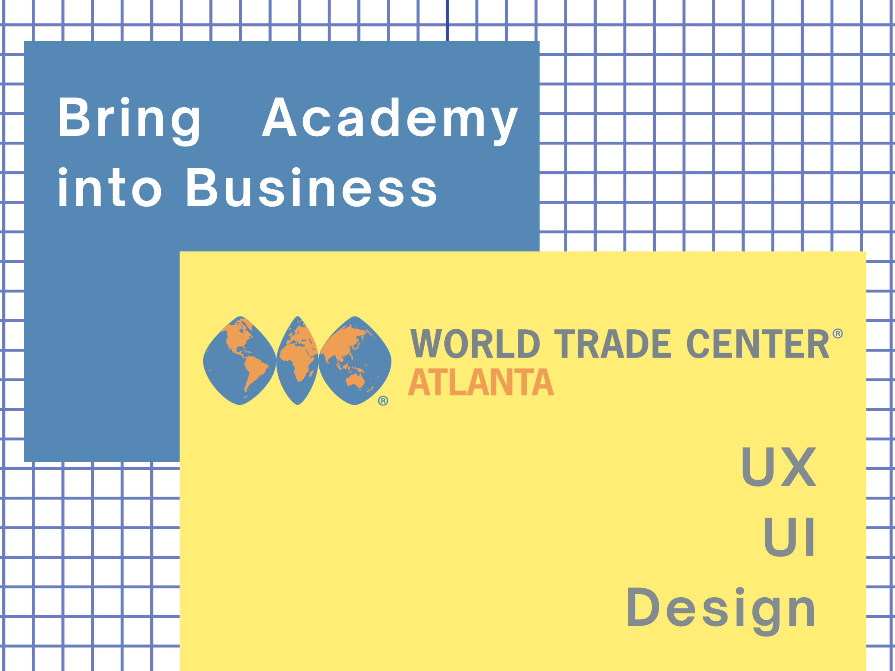
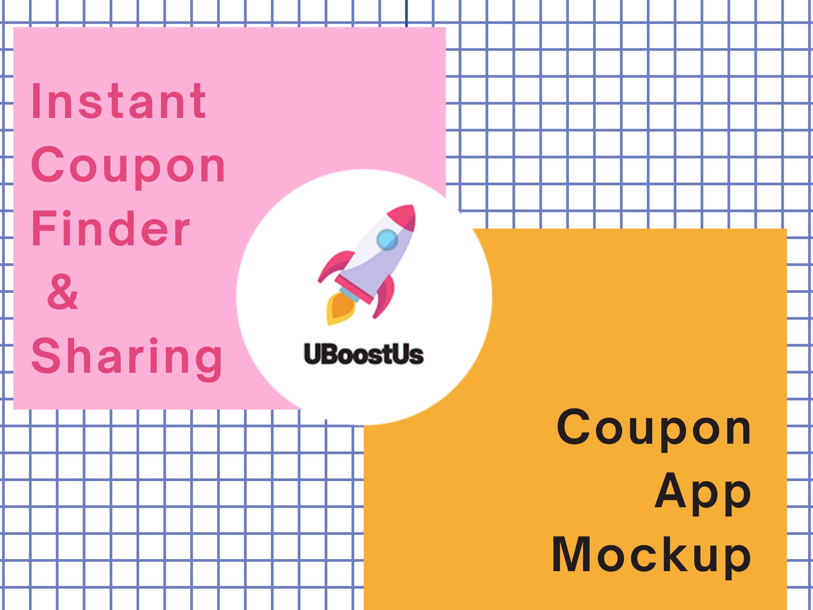
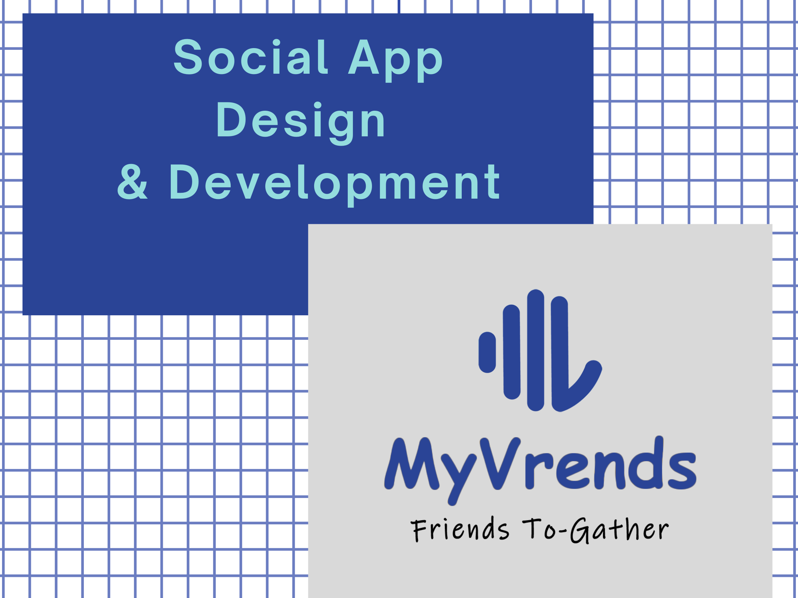
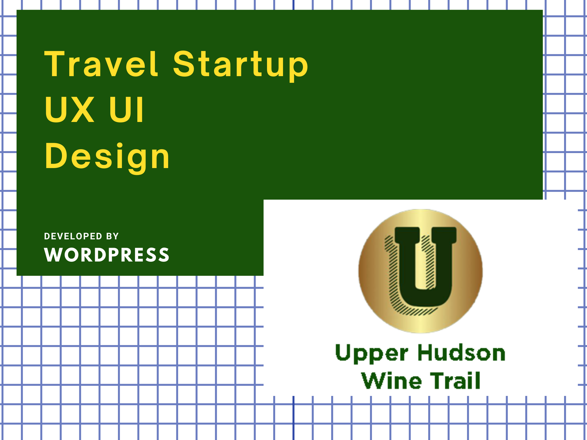
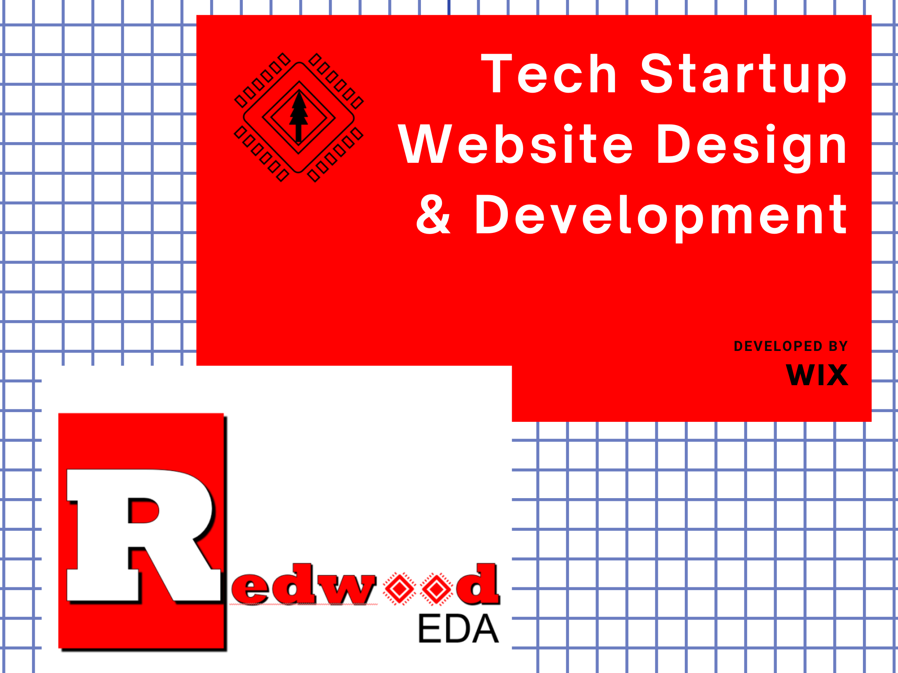
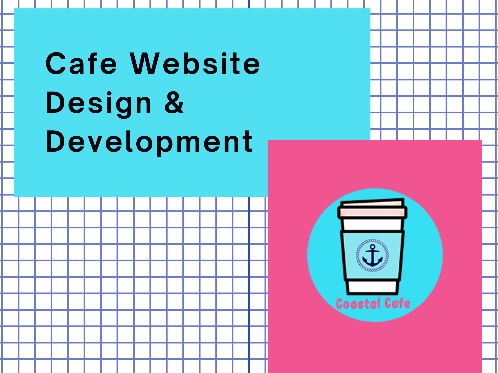
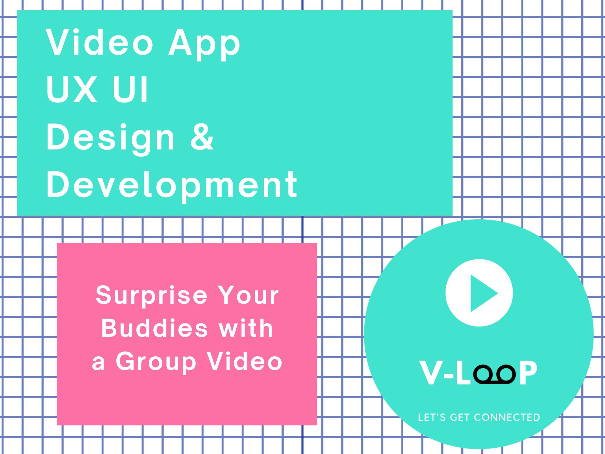
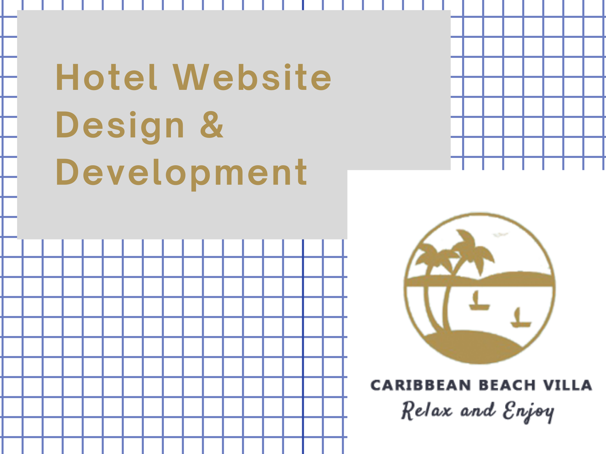

World Trade Center Atlanta Website Redesign
As an international business community, it is about to launch new Academy page to its official website.
To make the WTC Atlanta website a more contemporary international business community, my project aims to design a prototype focusing on the Home and Academy page, which provides a platform for members and partners to explore and share business resources and learn and develop business skills.

Duration: 3 months
Methods: Card Sort, Interviews, Comparative Analysis, Usability Tests, Wireframes, Prototyping
Tools: Adobe XD, Optimal Workshop, UserTesting
By the end of the project, I have collected insights and feedbacks from different groups and turned all findings into the prototype that meets WTC Atlanta's design guidelines and got their recognition for the work.
View XD PrototypeUBoostUs App Design & Development
A mobile coupon app for finding nearby coupons and sharing with friends via QR code to collect boost points.
UBoostUs is a mobile coupon app that connects users with their friends together by sharing local business coupons via
QR code and getting boost points for future redemption.
Before the sketch, I did the competitive research and user persona to define the major content and layout for this app.
I created the project on Trello for agile team collaboration. In phase II of the project, I've finished mocking up the overall prototype.

Duration: 2 months
Methods: User Persona, Competitive Analysis, Wireframe, Prototyping
Tools: InVision, Sketch, Adobe Photoshop, Trello
View InVision PrototypeMyVrends App Design & Development
A social app that aims at local college students. Users can create and share events nearby to meet friends and gather together. With a unique QR code, you can invite your friends to scan it and install the app to get referral points
Duration: 6 months
Methods: Interviews, Card Sort, Usability Testing, Wireframes, Prototyping, IOS/Android App Development
Tools: Optimal Workshop, Figma, InVision, Adobe Photoshop, Firebase, Apple Developer, Thunkable, VS Code
For the UX|UI design, I sketched the prototype on Figma. The icons and typography were designed in Photoshop. For app development, I developed the algorithm on Thunkable. The back-end database is built on Google Firebase.
View Prototype on Figma IOS DownloadAndroid Download
Upper Hudson Wine Trail Website Redesign
An amazing New England getaway place for family gathering, team building and wine tasting in the post-pandemic.
UHWT is a winery business whose current website is with incomplete context and outdated layout. My goal was to build up a responsive business website with advanced usability that provides better user experience with interaction designs, improves brand awareness by providing a new romantic lifestyle, and attracts more customers to come visit the wine trail.
Duration: 3 months
Methods: Brand Analysis, Competative Analysis, User Personas, Wireframes, Prototyping
Tools: Google Analytics, Figma, InVision, Slack, WordPress
WordPress MockupRedWood EDA Website Redesign
A silicon chip maker startup business that prvides techniques and turotials for revolutionizing the silicon industry with "transaction-level design" capabilities for ASIC FPGA and cloud FPGA design.
It has an existing website with domain. However, it isn't dynamic and eye-catching.
Based on several rounds of interviews with the sponsor, I figured out existing problems and challenges,
and the to-do-list for the upgrade of the website. I mocked up the wireframe on Adobe XD.
I also designed the logo and prototype for the new website. For the next step,
I drafted the conceptual map and built the website on Wix. I kept the core products and services sections,
and I also add the education and contact sections to make the website more interactive with its users.

Duration: 2 months
Methods: Interviews, Wireframe, Prototyping
Tools: Adobe Photoshop, XD, Illustrator, Wix
Visit SiteCoastal Cafe
A business transition proposal for the local small physical store to run online business during the pandemic.
In this project, I designed and developed a responsive website for Coastal Cafe. The overall color palette is coastal style. The wireframes were scratched on XD. I designed the logo and banner on Photoshop. Part of the images were taken by me. The menus were designed on Canva. All the codes were created from scratch on Visual Studio Code. I used phpMyAdmin to manage the database.

Duration: 1 months
Methods: Market Analysis, Competitive Research, Wireframe, Prototyping
Tools: Google Analytics, Adobe Photoshop, XD, Canva, VS Code, MySQL
View SiteV-loop Video Sharing App Mockup
A web-based video sharing app that allows users to record individual video and get stitched with your friend's together as a group video to share with your family and friends.
I did the competative research and mocked up the prototypes in Figma based on several rounds of brainstorming and interviews with the spnosor and end users. I also commpleted writing the codes for front-end, including the back-end web server and database parts. Next step, I'll work with the back-end developer to apply the video API to it.

Duration: 1 month
Methods: Competative Research, Interviews, Usability Tests, Mockup, Web Development, Cloud
Tools: Adobe Illustrator, Figma, VS Code, MySQL, AWS
View PrototypeCaribbean Beach Villa Website Design & Development
A local hotel website that provides a great getaway place when post-pandemic. It provides online room reservation and catering order services.
I mocked up the website from scratch during the pandemic, aiming to provide some ideas for local small business to swtich from traditonal brick-and-mortar mode to e-commerce mode.

Duration: 2 months
Methods: Competative Analysis, Card Sorting, Wireframes, Prototyping, Web Development
Tools: Adobe XD, Optimal Workshop, UserTesting, VS Code, phpMyAdmin, MySQL
By the end of the project, I have collected insights and feedbacks from different groups and turned all findings into the prototype that meets WTC Atlanta's design guidelines. and got their recognition for the work.
View Site